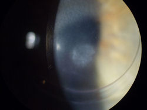

Являясь прибыльным бизнесом для офтальмологов, ФРК является вредной и ненужной операцией на глазах. ФРК предшествовала LASIK, но затем впала в немилость, когда была внедрена система LASIK. С точки зрения офтальмолога-бизнесмена, процедура LASIK не требовала такого большого времени, как PRK, и была более востребованной на рынке, чем PRK. После того, как стали известны широко распространенные проблемы, связанные с LASIK, PRK была вновь представлена на рынке под новыми маркетинговыми названиями, такими как "расширенная поверхностная абляция" и LASEK. Мы верим, что когда-нибудь PRK и LASEK будут раз и навсегда выброшены на свалку рефракционных операций.Изображение: ФРК была выполнена на этом глазу за год до того, как была сделана фотография. У пациента развилось постоянное помутнение центральной части роговицы, что привело к значительному ухудшению зрения.
Пострадавшие пациенты PRK/LASEK приглашаются на присоединяйтесь к обсуждению на FaceBook .
ЧТО ТАКОЕ ФРК? PRK расшифровывается как фоторефракционная кератэктомия. Как и LASIK, цель PRK - уменьшить или вовсе исключить необходимость в очках или контактных линзах. ФРК похожа на операцию LASIK в том смысле, что лазер используется для выжигания ткани роговицы, что изменяет способ фокусировки световых лучей на сетчатке. Основное отличие заключается в том, что при LASIK роговичный лоскут снимается с помощью лезвия или лазера, чтобы подвергнуть воздействию лазера строму роговицы. При ФРК поверхностный слой роговицы - эпителий - соскабливается или удаляется иным образом без разрезания лоскута. Эпителиальные клетки регенерируют в течение нескольких дней после ФРК, однако, Мембрана Боумена , который играет жизненно важную роль в поддержании здоровья роговицы, необратимо разрушается в зоне абляции. Некоторые офтальмологи предполагают, что необратимое разрушение боуменовой мембраны во время ФРК может привести к поздним осложнениям, поскольку боуменова мембрана является защитным барьером между окружающей средой и стромой роговицы.
А КАК НАСЧЕТ ЛАСЕКА? Разница между PRK и LASEK очень мала. В оригинальном методе PRK поверхность роговицы - эпителий - удаляется (разрушается) механически, чтобы обнажить роговицу перед лазерной абляцией. При лазерной обработке эпителий размягчается спиртовым раствором, а затем приподнимается, обнажая роговицу. При лазерной обработке эпителий возвращается на прежнее место. На первый взгляд это может показаться лучшим методом, чем разрушение эпителия, но многие хирурги выступают против этого. Сохранение поврежденного эпителия связано с послеоперационными осложнениями. Задавать вопрос "что лучше, ФРК или ЛАСЕК?", все равно что спрашивать "что лучше - сломать руку бейсбольной битой или кувалдой?".;
КАКОВЫ РИСКИ ФРК? Помутнение (образование рубцов) является распространенным осложнением ФРК. Чтобы снизить риск помутнения, многие хирурги в настоящее время используют токсичное вещество под названием митомицин-С (MMC) во время ФРК. MMC - это химиотерапевтический препарат, который приводит к гибели клеток и не одобрен FDA для использования с PRK. Сообщалось, что MMC оказывает долгосрочное неблагоприятное воздействие на глаза. Вот ссылка на подборку исследовательские статьи по MMC .
Боль, помутнение, хроническая сухость в глазах, ухудшение зрения и проблемы с ночным зрением являются наиболее распространенными жалобами после ФРК и LASEK. После ФРК у всех глаз наблюдается стойкая и ускоренная потеря клеток роговицы.
ПРОБЛЕМЫ ПОСЛЕ PRK/LASEK? Пациенты, у которых возникают проблемы после ФРК и LASEK, должны отправьте отчет о медицинском наблюдении с Управлением по санитарному надзору за качеством пищевых продуктов и медикаментов в режиме онлайн. Кроме того, вы можете позвонить в Управление по санитарному надзору за качеством пищевых продуктов и медикаментов по телефону 1-800-FDA-1088, чтобы сообщить об этом по телефону. бумажный бланк и либо отправьте его по факсу на номер 1-800-FDA-0178, либо отправьте по почте на адрес, указанный внизу страницы 3, либо загрузите Мобильное приложение MedWatcher для сообщения о проблемах с LASIK в FDA с помощью смартфона или планшета.
Является ли ФРК более безопасной, чем LASIK?
От редактора: Я часто получаю электронные письма от людей, которые хотят знать, безопаснее ли ФРК, чем LASIK. Я не врач, поэтому могу высказать только свою личную точку зрения как неспециалист.
ФРК несет в себе многие из тех же рисков, что и LASIK, за исключением осложнений с использованием лоскута.
Я общался с бесчисленным количеством пациентов, у которых после ФРК были плохие результаты. Помутнение зрения, боль, сухость в глазах и проблемы с ночным зрением являются наиболее распространенными жалобами после ФРК. Регресс также наблюдается после ФРК.
После ФРК все глаза испытывают стойкую, ускоренную потерю клеток роговицы.
Ненужные рефракционные операции (RK, PRK, LASIK, epi-LASIK, LASEK, эпи-ЛАСЕК, имплантируемые линзы, замена рефракционных линз) становятся основной причиной потери зрения, и это полностью предотвратимо.
Короче говоря, я выступаю против всех форм плановой хирургии глаза. Оставь свои очки при себе!
Исследование выявило стойкую, ускоренную потерю клеток роговицы после ФРК и LASIK
Выдержки:
"В период от 6 месяцев до 5 лет [после ФРК] плотность кератоцитов в строме по всей толщине снижалась в среднем на 3,2% в год, что более чем в семь раз превышает нормальный годовой показатель в 0,45%".;
"В период от 6 месяцев до 5 лет [после операции LASIK] плотность кератоцитов в строме по всей толщине снижалась в среднем на 4,2% в год, что в 10 раз превышает годовой показатель в нормальной роговице, составляющий 0,45%".;
"Это проспективное 5-летнее лонгитюдное клиническое исследование демонстрирует постепенную потерю кератоцитов из передней части стромы после ФРК, а также из стромального лоскута и стромы непосредственно за местом абляции после LASIK. К 5 годам после обеих процедур потеря кератоцитов в задней части стромы также была значительной."
"Однако нельзя исключать возможность долгосрочного эффекта недостаточности кератоцитов, учитывая множество функций этих клеток".;
***
В ходе коллегиального обсуждения доктор Роджер Штайнерт заявил: "Авторов следует поздравить с замечаниями, которые заслуживают внимания и, в случае подтверждения и расширения, вызывают опасения, что эксимерная лазерная абляция может в конечном итоге привести к снижению количества кератоцитов ниже уровня, необходимого для поддержания обновления внеклеточного матрикса. Можно предположить, что эта потеря может привести к эктазии роговицы".;
Источник: Erie et al. Длительный дефицит кератококка роговицы после фоторефракционной кератэктомии и лазерного кератомилеза in situ . Trans Am Ophthalmol Soc. 2005;103:56-68.
Родитель сообщил о самоубийстве сына, связанном с PRK, в FDA - 14.11.2016
Мой сын, [отредактировано FDA], покончил с собой [отредактировано FDA] в 2016 году, нанеся себе огнестрельное ранение в [отредактировано FDA]. Он написал предсмертные записки, в которых утверждал, что покончил с собой, потому что [отредактировано FDA] повредил глаза в результате процедуры PRK (разновидности лазерной коррекции зрения) и таким образом разрушил свою жизнь. Мой сын, [отредактировано FDA], был [отредактирован FDA]. Он получал высшее образование в [удалено FDA]. Он работал инженером-нефтяником. В раннем подростковом возрасте у него были проблемы с депрессией, но он был стабилен до тех пор, пока его не отправили воевать в [удалено FDA]. [отредактировано FDA] перенес несложную операцию LASIK в рамках [отредактировано FDA] приблизительно 5 лет назад, в 2010 году, с возможным ухудшением зрения в [отредактировано FDA] 2015 году. В 2015 году ему была проведена процедура PRK [отредактировано FDA] доктором [отредактировано FDA]. Перед процедурой у него был минимальный анамнез и медицинское обследование. Не было никакой информации о диагнозе моего сына - ПТСР, тревожность, неспособность к обучению или депрессия. Не было указано, какие лекарства он принимал. После процедуры у него появились постоянные боли в глазах, сухость в глазах и, в конечном итоге, ухудшение зрения до 100/20. Он потерял зрение в [отредактировано FDA] 2015 году, в результате чего не мог адекватно визуализировать, чтобы продолжать занятия, и не смог найти работу из-за потери зрения. Он неоднократно посещал доктора [отредактировано FDA], который продолжал "консервативное лечение", несмотря на психологическое ухудшение состояния моего сына. Послеоперационный уход включал в себя то, что врач, настроенный враждебно по отношению к моему сыну, не направил его к другому врачу, обвинив пациента в осложнении, и, в конечном счете, пациент почувствовал безнадежность и решил покончить с собой. Это осложнение, связанное с лазерной обработкой глаза, привело моего сына в тяжелое экономическое положение и немедленно привело к ухудшению психологического состояния. Он написал предсмертные письма, в которых утверждал, что покончил с собой из-за того, что доктор [отредактировано FDA] испортил ему глаза. Я сертифицированный акушер-гинеколог, что включает в себя сертификацию хирурга. Я в ужасе от ложной рекламы LASIK как "безопасной процедуры", в то время как на самом деле жизни людей были разрушены из-за того, что врачи ставили денежную выгоду выше медицинского обслуживания пациентов. После ужасной смерти моего сына, потерявшего зрение в результате этой ФРК, процедуры LASIK для его глаз, я была еще больше напугана осложнениями и самоубийствами, связанными с потерей зрения в результате выбранных процедур LASIK, разрушением жизней, вызванным осложнениями, распространенными осложнениями, о которых не сообщалось пациентам, и недостаточная медицинская осведомленность пациентов врачами перед этими процедурами. Ссылка на отчет
Военнослужащий, проходящий срочную службу, подает в Управление по санитарному надзору за качеством пищевых продуктов и медикаментов отчет о травмах от PRK - 25.03.16
В 2001 году, когда я был на действительной службе, мне сделали операцию на обоих глазах, [отредактировано FDA]. Пришлось перенести ее несколько месяцев спустя из-за образования рубцов. Заметил, что после этого мне пришлось постоянно носить солнцезащитные очки, и мое зрение в ночное время / при слабом освещении значительно ухудшилось. Начались мигрени. Симптомы прогрессировали до тех пор, пока в [удалено FDA] 2011 году я не очнулся в отделении неотложной помощи с явным приступом. Это повторилось в [удалено FDA] 2012 году, и тогда у меня был диагностирован судорожный синдром. По ночам веко моего левого глаза прилипает к глазному яблоку, что провоцирует судороги и вызывает сильную боль в этом глазу и мигрень. Моя кратковременная память ухудшается. Сейчас я принимаю лекарства от артериального давления. Из-за этого я потерял работу Даже при приеме противосудорожных препаратов у меня иногда бывают болезненные ночные приступы этих побочных эффектов.
История Джин - нанесение шрамов PRK 27.03.2015
В сентябре 2014 года я прошла ФРК. Когда я спросила врача о возможных осложнениях, он сказал, что процедура может не исправить ваше зрение и вам придется надеть очки. Я решила, что попробую.
Сейчас, спустя 6 месяцев после моего последнего обследования, я обнаружила, что мои роговицы воспалены. Я почти ничего не вижу и совершенно не могу водить машину, у меня все как в тумане.
Хуже всего то, что я дрессировщик крупных кошек, таких как львы и тигры. Моя работа с ними закончится, если у меня не улучшится зрение.
Мой врач сказал, что за все годы его жизни с ним никогда не случалось ничего подобного. Он прописал мне стероидные глазные капли, надеясь, что это уменьшит страх.
Пожалуйста, подумайте дважды, прежде чем позволить этому случиться с вами. Если я не смогу видеть, то не смогу работать со своими большими кошками. Мне сказали, что контактные линзы или очки не подходят и что он ничем не сможет мне помочь.
Электронное письмо от читателя этого веб-сайта от 2.11.2014
Мне 26 лет, и месяц назад я прошла ФРК. У меня миопия -2 степени без астигматизма. У меня сильное помутнение роговицы, из-за которого мое зрение как в 3D-очках. Это кошмар. Врачи говорят, что все наладится, но на это могут уйти месяцы, годы. Я сожалею об этой операции и жалею, что у меня нет машины времени! Сейчас моя единственная награда - спасать людей от совершения самых больших ошибок в их жизни!
Военнослужащий подает заявление о травме в Управление по санитарному надзору за качеством пищевых продуктов и медикаментов - 8/12/2014
В 2012 году мне была сделана рефракционная операция по ФРК [отредактировано FDA]. У меня диагностировали светобоязнь. С тех пор мне приходится практически постоянно пользоваться солнцезащитными очками днем, при солнечном свете, искусственном освещении, ночью и за рулем. Я пошла к своему офтальмологу, и он сказал, что никогда не сталкивался с ситуацией, подобной моей. При кратковременном воздействии света я испытываю боль в глазах, как будто меня режут острым ножом. После воздействия в течение примерно двух часов я начинаю испытывать головную боль типа мигрени, которая вынуждает меня отключиться и поспать 2 часа, а также принять не менее 800 миллиграммов ибупрофена, чтобы избавиться от боли. Это серьезно сказывается на моей военной карьере Это негативно сказывается на моем времяпрепровождении с женой и детьми. Я вынужден постоянно носить темные солнцезащитные очки, как в помещении, так и на улице. Я читал о множестве случаев, подобных моему, после LASIK/PRK и других операций на глазах. Иногда я снимаю солнцезащитные очки, просто чтобы убедиться, что мне ничего не мерещится, но через несколько секунд боль появляется снова. Я думаю, что FDA действительно должно обратить внимание на этот вопрос и изучить или приостановить эту процедуру до тех пор, пока она не будет дополнительно изучена.
Кошмар после операции на брюшной полости - Отправлено по электронной почте веб-мастеру от LasikComplications.com 16.08.2011
Отрывок: "Никто не мог с уверенностью сказать мне, что двоение в глазах исчезнет вместе со вспышками звезд и размытием изображения. В итоге я пережила стресс и впала в депрессию, после чего меня пришлось госпитализировать и принимать лекарства... В 2010 году я заметил, что у меня появились проблески света в моем исправленном левом глазу, поэтому я обратился к своему офтальмологу, который сказал, что увидел разрыв моей сетчатки... В то время операция на один глаз стоила, вероятно, пару тысяч долларов, но стоимость лечения острой депрессии и потери времени на работе превысила 10 000 долларов, так что это был дорогостоящий выбор и жизненный урок."
Постоянное отстранение от полетов пилота ВВС США после фоторефракционной кератэктомии
Дэвис РЕ, Иван диджей, Рубин Р.М., Гуч Д.М., Тредичи Т.Д., Рейли КД.
Журнал "Авиакосмическая среда", ноябрь 2010; 81(11):1041-4.
ВВЕДЕНИЕ: Фоторефракционная кератэктомия (ФРК) широко изучалась в литературе, и ее потенциальное применение в летном составе не осталось незамеченным. Частота осложнений после рефракционной хирургии роговицы (CRS), включая ФРК и лазерный кератомилез in situ (LASIK), остается низкой, при этом у большинства пациентов улучшается острота зрения без коррекции и снижается зависимость от очков. В целом, предсказуемость, низкий уровень сложности, высокая вероятность успеха, стабильность и безопасность - все это было названо в качестве факторов, способствовавших внедрению PRK среди авиаторов. В результате ВВС США (USAF) утвердили PRK для авиаторов в августе 2000 года. Однако качество визуальных результатов, полученных после CRS, по-прежнему вызывает озабоченность, учитывая уникальные требования к визуальным характеристикам летного состава военной авиации, особенно в суровых условиях эксплуатации.
КЛИНИЧЕСКИЙ СЛУЧАЙ: В этой статье будет представлен недавний случай глазной гипертензии, вызванной стероидами, которая, как полагают, спровоцировала неартериитную переднюю ишемическую оптическую нейропатию (NA-AION), связанную со снижением зрительных функций после ФРК, что привело к первому постоянному отстранению пилота ВВС США от полетов после CRS.
ОБСУЖДЕНИЕ: CRS радикально расширила круг кандидатов в члены летного состава и снизила зависимость от зрелищ у военных. Несмотря на низкий уровень риска современной CRS, этот случай демонстрирует потенциальный неблагоприятный исход такой плановой операции. Понимание этих редких, но потенциально разрушительных осложнений и уникальных аэромедицинских факторов риска для летного состава имеет первостепенное значение при рассмотрении вопроса о плановой операции по улучшению зрения.
О более неблагоприятных исходах ФРК сообщалось в Управление по санитарному надзору за качеством пищевых продуктов и медикаментов
https://www.accessdata.fda.gov/scripts/cdrh/cfdocs/cfmaude/Detail.CFM?MDRFOI__ID=3628055
Когда я служил в Военно-воздушных силах, мне сделали операцию на глазах, и я сожалею об этом. Прошло 5 лет, а мои глаза постоянно болят и очень сухие. Когда я просыпаюсь и открываю глаза, мне кажется, что я окунул их в хлорную воду. Мне кажется, что они ухудшаются, иногда я не могу дотронуться до века левого глаза. Что еще хуже, мне все еще нужны очки, так что вся эта боль и тяжелые послеоперационные страдания были напрасны. Перед операцией я поговорил с коллегой-летчиком, который предупреждал меня, но я подумал, что это, должно быть, уникальная ситуация, и не послушал ее, так что я знаю, что я не единственный такой. Теперь я постоянно пользуюсь глазными каплями и принимаю витамины для глаз, чтобы посмотреть, поможет ли это, и это помогает, но не намного. Капли помогают от сухости, но не от боли. В тот день, когда группе из нас предстояла операция, я помню, что был в палате, и мне вручили кучу бумаг, я уверен, формуляров ответственности, и мне ничего не объяснили; помню, в тот день я спросил, есть ли у нас выбор между процедурой lasik, и мне сказали, что нет. грубо. Мне ни разу не объяснили о возможных последствиях ФРК в течение всей жизни.
http://www.accessdata.fda.gov/scripts/cdrh/cfdocs/cfMAUDE/detail.cfm?mdrfoi__id=2381345
В 2011 году [удалено] мне была сделана операция на [удалено]. Мне сказали, что я вернусь к работе через 6 дней с почти исправленным зрением. Я пришел на четырехдневный осмотр, и с моих глаз сняли контактные линзы. Мне сказали, что пару дней будет немного мурашки по коже. Я не проехал и пятнадцати минут по дороге, как почувствовал, что под веками у меня лезвия бритвы. Служа в армии, я старался изо всех сил, ставил обезболивающие капли больше, чем было предписано, и принимал несколько наркотических обезболивающих таблеток. Ничего из этого не помогло. Я связался со своим хирургом и сказал ему, что постараюсь продержаться до следующего дня. Это была самая сильная боль, которую я когда-либо испытывал в своей жизни. На следующий день я лег, и мне сказали, что у меня "слиплись глаза". "они снова надели контактные линзы и еще около двух недель ждали, пока заживут 8-миллиметровые ссадины на обоих моих глазах - гражданский офтальмолог заметил эти ссадины как раз перед тем, как пришел мой хирург и осмотрел мои глаза, и не обратил на них внимания! ссадины так и не зажили, поэтому мне заклеивали глаза пластырем на полторы недели, и в конце концов ссадины затянулись, оставив после себя много рубцовой ткани, с которой я до сих пор сталкиваюсь. Я принимаю большие дозы стероидов и продолжаю снижать их дозу, но шрамы по-прежнему не заживают. Я добровольно согласился на эту операцию, чтобы сделать свою жизнь лучше, проще и быть более готовым к выполнению определенных задач в моей карьере в [удалено]. Насколько я понимаю, это была довольно быстрая и краткосрочная процедура заживления. Но я, предположительно, один из тысяч избранных людей, с которыми это происходит. Мне сказали, что по истечении шести месяцев после операции, если этот рубец не заживет, я могу решиться на повторную операцию или просто справиться с ней.
http://www.accessdata.fda.gov/scripts/cdrh/cfdocs/cfMAUDE/Detail.CFM?MDRFOI__ID=1040892
Я перенесла операцию prk lasik. Сейчас у меня очень высокий показатель rx - 3,25, и мне по-прежнему требуется умеренный rx для определения расстояния. У меня сильная сухость глаз. Теперь мне нужно использовать глазные капли 4 раза в день и закупоривать слезные протоки. Мне также приходится принимать капли restasis по рецепту врача 2 раза в день. Я также ежедневно принимаю капсулы theratears nutrition omega-3 для лечения проблем с сухостью глаз. Мне сказали, что после этой процедуры мне понадобятся очки для чтения, но риск очень высок. Перед операцией мне потребовалось всего 2,50 rx на расстоянии и никаких показаний rx. Я должен сказать вам, что я также работаю с врачом, который проводил мою операцию, и считаю, что меня недостаточно хорошо информировали. Я знаю, что я был чрезмерно корректирован при проведении этой процедуры. Но я испытывал большой дискомфорт во время восстановления. Прошло уже больше года, а у меня все еще есть проблемы. Я эмоционально расстроен из-за того, что вынужден мириться с высокой степенью зависимости от потребностей в близком зрении. Я больше не могу ясно видеть в зеркале. Мне нужны очки, чтобы видеть, что я ем из своей тарелки. Это были настоящие американские горки для эмоций. Мне нужен мой прибор для чтения, а также увеличительное зеркало, чтобы просто выщипать брови! это меня крайне огорчило, поскольку я знаю, что, вероятно, по мере взросления мне по-прежнему будет требоваться более сильная помощь в чтении. Я довел это до сведения руководства на своем рабочем месте, и они ответили только: "Я думаю, вы как раз относитесь к тому проценту людей, которые недовольны процессом. "каково это для сотрудника такой практики! я работаю в opticare.
http://www.accessdata.fda.gov/scripts/cdrh/cfdocs/cfMAUDE/Detail.CFM?MDRFOI__ID=1075441
Военные применили лазерную коррекцию зрения prk на обоих моих глазах, и мое зрение на правом глазу стало нечетким. Я с трудом читаю электронную почту на своем ноутбуке и не могу просматривать презентации PowerPoint во время занятий. Ночью я вижу вспышки звезд вокруг фонарей, что делает вождение в таких условиях опасным.
http://www.accessdata.fda.gov/scripts/cdrh/cfdocs/cfMAUDE/Detail.CFM?MDRFOI__ID=1039122
В результате ФРК волновым фронтом с помощью эксимерного лазера visx у меня была избыточная коррекция левого глаза. Кроме того, у меня ужасные побочные эффекты в обоих глазах - порезы, которые сильно влияют на мое ночное зрение и зрение в условиях низкой освещенности. Легкая степень сухости глаз также создает проблемы. Процедура, которая должна была облегчить мою жизнь, на самом деле значительно усложнила ее выполнение. Я бы очень хотела, чтобы ко мне вернулось зрение в очках. Не проходит и дня, чтобы мне не напоминали о нежелательных явлениях, последовавших за моей фрк.
http://www.accessdata.fda.gov/scripts/cdrh/cfdocs/cfMAUDE/Detail.CFM?MDRFOI__ID=1293889
Мне сделали операцию на глазу, чтобы скорректировать зрение. Сейчас я страдаю от серьезных проблем с сухостью глаз. Меня не обследовали должным образом и не предупредили об этой плановой операции
http://www.accessdata.fda.gov/scripts/cdrh/cfdocs/cfmaude/Detail.cfm ?MDRFOI__ID=2541249
В прошлом году мне сделали ФРК. К счастью, у меня не было боли, которую некоторые описывали после процедуры, однако зрение было затуманено как минимум на 6 месяцев. К счастью, мне лечили только левый глаз. Я бы ни за что не смог управлять автомобилем или выполнять свою работу, если бы мне пролечили оба глаза. Сегодня, спустя более года после процедуры, у меня появились боль, покраснение, помутнение зрения и сильное слезотечение. Эта процедура является варварской, и если бы практикующий врач, проводящий процедуру, лучше проинформировал меня или провел больше исследований о послеоперационных осложнениях, я сомневаюсь, что решился бы на эту процедуру.
http://www.accessdata.fda.gov/scripts/cdrh/cfdocs/cfmaude/Detail.cfm ?MDRFOI__ID=2626288
6 декабря 2010 года мне сделали двустороннюю ФРК. Я перенесла лазерную операцию в надежде, что мне не придется носить очки, поскольку я ношу корректирующие линзы с 6 лет. До операции у меня не было проблем с ночным зрением, а теперь, после операции, они у меня появились. Кроме того, теперь у меня сухие глаза, которые требуют передозировки дважды в день и других смазывающих глазных капель по мере необходимости в течение дня. Иногда я также испытываю дискомфорт в глазах. Мне нужно носить очки для вождения автомобиля. После операции мне сделали три разные пары очков из-за изменений зрения. Я не знала, что возникнут такие побочные эффекты.
http://www.accessdata.fda.gov/scripts/cdrh/cfdocs/cfmaude/Detail.cfm ?MDRFOI__ID=1559401
Сильная сухость в глазах после операции ФРК. Начнем с того, что я практикующий врач в течение 4 лет, хорошо начитан и обладаю высоким уровнем медицинских знаний, поэтому добровольно согласился на операцию ФРК. Я была осведомлена о возможных [побочных эффектах], но понятия не имела, насколько серьезными они могут быть. Поскольку я никогда не пробовала контактные линзы, я поговорила с рекомендованным офтальмологом, который порекомендовал ФРК, процедуру, аналогичную lasik, и выполняемую тем же лазером. Я была в восторге от идеи идеального зрения - теперь у меня зрение 20/15 от обычного - и, хотя я прочитала об этой процедуре в Интернете и о той информации, которую он мне дал, это показалось мне простым делом. Оглядываясь назад, я понимаю, что возможные негативные последствия преуменьшаются, но если вам не повезло с ними, вы, как и я, пожалеете, что сделали операцию. Итак, в чем проблема. В 2007 году я перенесла операцию, после которой в течение 1-2 недель у меня были сильные боли. После этого, казалось, стало лучше, но в течение следующих шести месяцев у меня были сухие глаза. Я думал и был убежден, что у меня все в порядке, когда примерно 16 месяцев спустя, в 2009 году, у меня сильно пересохли глаза, и веки прилипали к глазным яблокам каждый раз, когда я просыпался рано утром. Моя роговица была бы повреждена из-за отслоения эпителия. Это повреждение было подтверждено при осмотре моим офтальмологом. Я хочу внести ясность: за всю мою жизнь у меня не было проблем с сухостью глаз, и у меня также нет семейной истории. Следующие месяц или два были сущим адом, и я буквально боялась ложиться спать, страшась мучительной боли, которая, как я знала, придет, когда я проснусь. Мой врач пытался сказать, что это не имеет никакого отношения к операции, и я думаю, что это нелепо, и в конце концов он признал возможную связь. В итоге я перепробовала множество различных глазных капель, в том числе "рестазис", пользовалась увлажнителем воздуха, спала без обогрева, надевала на глаза защитные контактные линзы и вставляла верхние и нижние пробки в слезные протоки. Когда наступило лето с более высокой влажностью, все было лучше, но теперь, когда снова наступила зима, я снова испытываю сухость в глазах. Мы нашли один продукт, который помог, и нет, я не имею никакого отношения к компании, которая его производит, и мне приходится смазывать глаза этим продуктом каждый вечер, чтобы веки не прилипали к глазным яблокам, хотя, к счастью, это действительно помогает. Раньше я никогда не сообщал об этом в fda, и не знаю, делал ли это мой офтальмолог, но я бы никогда никому не рекомендовал эту операцию и, конечно, не пошел бы на нее, если бы знал, что такое может случиться. Кроме того, я думаю, что со стороны моего хирурга было неуместно рекомендовать операцию до того, как он порекомендовал мне надеть контактные линзы, и мне интересно, насколько это связано с тем фактом, что он только что купил аппарат и более чем счастлив резать людям глаза, если они готовы платить, а это не так. Я был таким. Название клиники, город и штат: Я не знаю, но не думаю, что проблема в этом. Проблема в процедуре, а не в лазере.
http://www.accessdata.fda.gov/scripts/cdrh/cfdocs/cfmaude/Detail.CFM?MDRFOI__ID=1970111
Операция Фрк. Мне никогда не говорили о каких-либо возможных осложнениях, связанных с сухостью глаз. У меня сильная сухость глаз. Я не думаю, что меня когда-либо проверяли на сухость глаз. Я не был полностью проинформирован об осложнениях и риске. Я была в приемной, чтобы сделать лазик, когда сотрудница офиса, сидевшая рядом со мной, делала ФРК и уговорила меня сделать ФРК вместо лазик. Мне никогда не говорили о возможности сухости глаз. Сейчас у меня пробки, и глаза по-прежнему болят и жгут каждый день. Цена по рецепту была около -4 и все еще далека от 20/20. Мне по-прежнему нужны очки, глаза постоянно болят, но я (б)(6) беднее. Это самая крупная афера в истории. Врачи зарабатывают бешеные деньги, но никогда не рассказывают о реальных побочных эффектах. Моим лечащим врачом был доктор (б)(6).
http://www.accessdata.fda.gov/scripts/cdrh/cfdocs/cfmaude/Detail.cfm ?MDRFOI__ID=2626288
6 декабря 2010 года мне сделали двустороннюю ФРК. Я перенесла лазерную операцию в надежде, что мне не придется носить очки, поскольку я ношу корректирующие линзы с 6 лет. До операции у меня не было проблем с ночным зрением, а теперь, после операции, они у меня появились. Кроме того, теперь у меня сухие глаза, которые требуют передозировки дважды в день и других смазывающих глазных капель по мере необходимости в течение дня. Иногда я также испытываю дискомфорт в глазах. Мне нужно носить очки для вождения автомобиля. После операции мне сделали три разные пары очков из-за изменений зрения. Я не знала, что возникнут такие побочные эффекты.
Отказ от ответственности: Информация, содержащаяся на этом веб-сайте, представлена с целью предупреждения людей об осложнениях LASIK и PRK перед операцией. Пациентам с проблемами, связанными с LASIK и PRK, следует обратиться за консультацией к врачу.